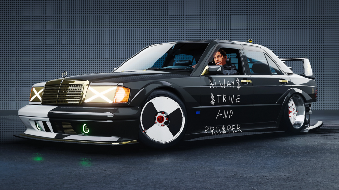

NFS Unbound
A Cultured take
Need for speed has been a key part of my early gaming
years. I got my first PC in 2003 and it came with ‘Need
For Speed: Hot Pursuit 2’ preinstalled. This gem was
released in 2002 and cemented a place in my heart forever.
I played every NFS game that came after and before it.
The
question however is that where does the latest addition to
the series NFS Unbound stand when compared to its
predecessors.

Story:
It failed to form a connection with me and ended up being too predictable. It followed the worn-out ‘NFS’ formula of the protagonist getting taken advantage of and later climbing his way back to the top. You will find a couple of racers in the story mode that give you a challenge in every race and that is a nice feeling to have. I would describe the dialogue to be excessive, jarring at times and desperate to form a connection with pop-culture. The voice acting was not a let-down. However, most players do not play a NFS game for the story or dialogue. They play it to RACE! Which brings us to the next segment.
Gameplay:
Fun. I played this game on the highest difficulty and it offered me a moderately difficult gameplay. The car collection is not too rand but you would find most of the big names in racing here. Car customisation is basic and bland but easy to get into. I felt a lack of interactive objects in the environment and the collectibles felt as though forcibly put into the world just for the sake of it. Racing was thrilling at high speeds and quite forgiving even on the highest difficulty. The economy works well if you win over 60% of the races but if you want to buy good cars frequently you will need to win almost every race you play. The cop chases feel stale on lower heat levers and offer some challenge on heat level 4 and 5. It does feel rewarding to bank all your winnings after escaping the cops and safely reaching your safehouse.
Art Design:
Very subjective, while some may find the ‘over the top’ graffiti styles effects around your car to be refreshing I however an no fan. There is however a silver-lining here in the form of customisability of said effects. Feel free to go with a flashy style or a subtle mono-coloured approach.
Sounds:
The audio is decent. It is no Forza or Gran Turismo but the in-game sounds won’t disappoint you considering it is after all an Arcade Racing Game and not a ‘racing simulator’. The in-game songs playlist however is a banger and will not bore you for your first playthrough.
Game Difficulty:
No complains here. It is simple enough to choose it from the menu and clearly defines what you should expect out of it. A reminder that on the highest difficulty you only get 2 retries per day (which includes the whole night and day cycle) and take a lot more damage from the environment.
Rating:
6.5/10 This entry into the series does not come close to the top five NFS games ever made but is certainly on my top 10 list.
When to buy?
The launch price is unreasonable. Its highly recommend to wait for a Sale to purchase this game.